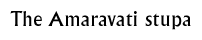

Discussion 1  |
|
Objectives: To introduce pupils to the purpose and context of ancient Indian wall reliefs, as well as to learn about a specific object from the museum's collection that appears on the web site.
Materials: Pictures of ancient Indian temples and stupas, map of India.
Class set-up: Whole group discussion
Vocabulary: Relief, stupa, Cast
Discussion: Discuss what wall reliefs are and say where they are found in ancient India. Where do you find
wall reliefs?
Inform pupils that the example they will be looking at is from the Amaravati stupa in India. Show the children where it was on the map and discuss the fact that the Amaravati stupa was built there by ancient Indian people.
Why do you think the Amaravati stupa was built?Explain to the children what the shape and layout of the temple was like, and where the wall reliefs which they are going to look at came from. Explain that the object they will see on the web site is actually the wall reliefs from the temple. Show pupils the line drawings of the relief and ask them to share what they see.
Discuss what the purpose of wall reliefs was, and what types of scenes appear in wall reliefs.
Wrap-up the discussion by explaining to the children why the temple was taken down and removed from its original location, and roughly if there are any issues that this raises. Background information:
The BuddhaBuddhist pilgrimage Teachings of the Buddha The growth and spread of Buddhism Ashoka and the Mauryan Empire
© The British Museum |